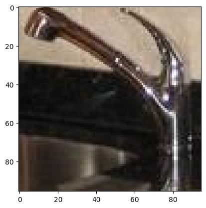
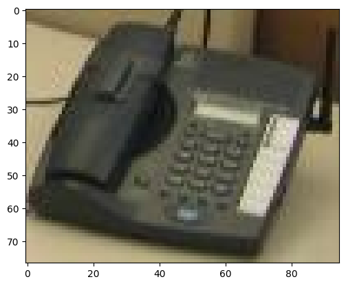

1.2.2: Audiovisual Scene objects#
Up until now, we’ve seen how we can use AudibleLight to generate audio-only Scene objects.
However, AudibleLight can also be used to create audio-visual soundscapes. This allows a visual representation of a Scene to be generated, in a similar manner to SELDVisualSynth[adrianSRoman/SELDVisualSynth].
The resulting video can be played back for debugging MicArray and Event positions, or can be used to train a model on audio-visual data. For more information, see the DCASE community challenges on audio-visual sound event localisation and detection.
Creating a Scene that supports images#
Let’s create a Scene that supports visual synthesis. To make this easier, we can pass in a directory of images using the image_path argument.
[13]:
import matplotlib.pyplot as plt
from IPython.display import Image, Audio, display
from audiblelight.core import Scene
from audiblelight import utils
[14]:
visual_scene = Scene(
duration=10,
backend="rlr",
sample_rate=22050,
video_low_power=True,
max_overlap=1,
video_res=(960, 480),
video_fps=5,
backend_kwargs=dict(
mesh=utils.get_project_root() / "tests/test_resources/meshes/Oyens.glb"
),
fg_path=utils.get_project_root() / "tests/test_resources/soundevents",
image_path=utils.get_project_root() / "tests/test_resources/images",
)
2026-01-14 12:54:07.974 | WARNING | audiblelight.worldstate:load_mesh_navigation_waypoints:1884 - Cannot find waypoints for mesh Oyens inside default location (/home/huw-cheston/Documents/python_projects/AudibleLight/resources/waypoints/gibson). No navigation waypoints will be loaded.
CreateContext: Context created
We can inspect the images available to our Scene under the fg_images attribute:
[15]:
print(visual_scene.fg_images[:2])
[PosixPath('/home/huw-cheston/Documents/python_projects/AudibleLight/tests/test_resources/images/doorCupboard/27_0.jpg'), PosixPath('/home/huw-cheston/Documents/python_projects/AudibleLight/tests/test_resources/images/doorCupboard/36_0.jpg')]
Note that currently visual synthesis is only support for the ray-tracing backend (i.e., where scene.state.name.upper() == "RLR").
Optional arguments#
When creating such a Scene, we can specify a variety of arguments, including:
video_fps: the frames-per-second of the videovideo_res: the resolution of the video, in the format (width x height)Note that the width of the video must be exactly twice that of the height, for correct perspective video rendering
video_low_power: applies a variety of adjustments to improve performance on weaker hardwarevideo_overlay_distance_scale_factor: scales the size of overlaid images depending on proximity to camera.video_overlay_base_size: the base size of overlaid images on the video, independent of distance.
For more information, including default arguments, see Scene.__init__.
Adding Event objects with images#
If we’ve correctly specified image_filepath, then image objects will automatically be added to Event objects, using the closest possible class to the audio file.
To show what we mean, let’s start by adding a waterTap Event:
[16]:
tap = visual_scene.add_event(
event_type="static",
filepath=utils.get_project_root() / "tests/test_resources/soundevents/waterTap/95709.wav",
)
print(tap.image_filepath)
Warning: initializing context twice. Will destroy old context and create a new one.
2026-01-14 12:54:10.471 | INFO | audiblelight.core:add_event:1152 - Event added successfully: Static 'Event' with alias 'event000', audio file '/home/huw-cheston/Documents/python_projects/AudibleLight/tests/test_resources/soundevents/waterTap/95709.wav' (unloaded, 0 augmentations), 1 emitter(s).
CreateContext: Context created
/home/huw-cheston/Documents/python_projects/AudibleLight/tests/test_resources/images/waterTap/32_0.jpg
We can load up the image as a numpy array using Event.load_image.
This method operates similarly to Event.load_audio: once an image has been loaded once, it will be cached to speed up future reads. Cached generation can be disabled with ignore_cache:
[17]:
tap_image = tap.load_image()
print(tap_image.shape)
(96, 95, 3)
Let’s try plotting the image.
[18]:
plt.imshow(tap_image)
plt.show()

That looks like a tap to me!
Manually adding Event images#
Of course, we can also add a specific image to an Event when adding this to a Scene. All we need to do is specify image_filepath in Scene.add_event.
Let’s try adding an Event with the audio from a running tap, but the image of a telephone:
[19]:
visual_scene.clear_events()
tapphone = visual_scene.add_event(
event_type="static",
filepath=utils.get_project_root() / "tests/test_resources/soundevents/waterTap/95709.wav",
image_filepath=utils.get_project_root() / "tests/test_resources/images/telephone/3_0.jpg",
duration=0.5,
scene_start=2.5
)
print(tapphone.image_filepath)
print(tapphone.filepath)
CreateContext: Context created
Warning: initializing context twice. Will destroy old context and create a new one.
Warning: initializing context twice. Will destroy old context and create a new one.
2026-01-14 12:54:11.338 | INFO | audiblelight.core:add_event:1152 - Event added successfully: Static 'Event' with alias 'event000', audio file '/home/huw-cheston/Documents/python_projects/AudibleLight/tests/test_resources/soundevents/waterTap/95709.wav' (unloaded, 0 augmentations), 1 emitter(s).
CreateContext: Context created
/home/huw-cheston/Documents/python_projects/AudibleLight/tests/test_resources/images/telephone/3_0.jpg
/home/huw-cheston/Documents/python_projects/AudibleLight/tests/test_resources/soundevents/waterTap/95709.wav
Now, let’s play the audio and show the image, to show that the classes are different.
[20]:
phone_img = tapphone.load_image()
tap_audio = tapphone.load_audio()
[21]:
plt.imshow(phone_img)
plt.show()

[22]:
Audio(tap_audio, rate=visual_scene.sample_rate)
[22]:
Audiovisual Scene synthesis#
Now that we’ve added Event objects with images to our Scene, we’re ready to generate a video file containing these objects.
[23]:
# Remove all the Events
visual_scene.clear_events()
visual_scene.clear_microphones()
# Add a microphone + single Event at known positions
visual_scene.add_microphone(microphone_type="ambeovr", position=[3.5, -3.5, 1.5])
ev = visual_scene.add_event(
event_type="static",
filepath=utils.get_project_root() / "tests/test_resources/soundevents/telephone/30085.wav",
image_filepath=utils.get_project_root() / "tests/test_resources/images/telephone/3_0.jpg",
duration=0.5,
scene_start=2.5,
# add at a known position: definitely visible from microphone
position=[1.5, -0.5, 0.5],
)
CreateContext: Context created
CreateContext: Context created
Warning: initializing context twice. Will destroy old context and create a new one.
Warning: initializing context twice. Will destroy old context and create a new one.
Warning: initializing context twice. Will destroy old context and create a new one.
CreateContext: Context created
Warning: initializing context twice. Will destroy old context and create a new one.
CreateContext: Context created
2026-01-14 12:54:12.812 | INFO | audiblelight.core:add_event:1152 - Event added successfully: Static 'Event' with alias 'event000', audio file '/home/huw-cheston/Documents/python_projects/AudibleLight/tests/test_resources/soundevents/telephone/30085.wav' (unloaded, 0 augmentations), 1 emitter(s).
To generate the video file, just call Scene.generate with video=True. You can also pass video_fname to specify the output pattern for any video files.
By default, one video will be generated for each MicArray object added to the Scene.
[24]:
visual_scene.generate(video=True, audio=False, metadata_dcase=False, metadata_json=False)
Rendering video...: 22%|██▏ | 11/50 [00:01<00:02, 13.63it/s]/home/huw-cheston/.cache/pypoetry/virtualenvs/audiblelight-5f5KpqNP-py3.10/lib/python3.10/site-packages/pyvista/core/filters/data_object.py:180: PyVistaDeprecationWarning: The default value of `inplace` for the filter `PolyData.transform` will change in the future. Previously it defaulted to `True`, but will change to `False`. Explicitly set `inplace` to `True` or `False` to silence this warning.
warnings.warn(msg, PyVistaDeprecationWarning)
Rendering video...: 100%|██████████| 50/50 [00:03<00:00, 15.12it/s]
Now that we’ve generated the video, we can play it. We’ll use ffmpeg to generate a .gif file that should play in most browsers.
Under normal use cases, however, you’ll probably just use the .mp4 file!
[26]:
import subprocess
# Convert with ffmpeg
subprocess.run([
'ffmpeg', '-i', 'video_out_mic000.mp4',
'-vf', 'fps=5,scale=960:-1:flags=lanczos',
'-loop', '0',
'-y', 'video_out.gif'
])
display(Image(filename='video_out.gif'))
ffmpeg version 6.1.1-3ubuntu5 Copyright (c) 2000-2023 the FFmpeg developers
built with gcc 13 (Ubuntu 13.2.0-23ubuntu3)
configuration: --prefix=/usr --extra-version=3ubuntu5 --toolchain=hardened --libdir=/usr/lib/x86_64-linux-gnu --incdir=/usr/include/x86_64-linux-gnu --arch=amd64 --enable-gpl --disable-stripping --disable-omx --enable-gnutls --enable-libaom --enable-libass --enable-libbs2b --enable-libcaca --enable-libcdio --enable-libcodec2 --enable-libdav1d --enable-libflite --enable-libfontconfig --enable-libfreetype --enable-libfribidi --enable-libglslang --enable-libgme --enable-libgsm --enable-libharfbuzz --enable-libmp3lame --enable-libmysofa --enable-libopenjpeg --enable-libopenmpt --enable-libopus --enable-librubberband --enable-libshine --enable-libsnappy --enable-libsoxr --enable-libspeex --enable-libtheora --enable-libtwolame --enable-libvidstab --enable-libvorbis --enable-libvpx --enable-libwebp --enable-libx265 --enable-libxml2 --enable-libxvid --enable-libzimg --enable-openal --enable-opencl --enable-opengl --disable-sndio --enable-libvpl --disable-libmfx --enable-libdc1394 --enable-libdrm --enable-libiec61883 --enable-chromaprint --enable-frei0r --enable-ladspa --enable-libbluray --enable-libjack --enable-libpulse --enable-librabbitmq --enable-librist --enable-libsrt --enable-libssh --enable-libsvtav1 --enable-libx264 --enable-libzmq --enable-libzvbi --enable-lv2 --enable-sdl2 --enable-libplacebo --enable-librav1e --enable-pocketsphinx --enable-librsvg --enable-libjxl --enable-shared
libavutil 58. 29.100 / 58. 29.100
libavcodec 60. 31.102 / 60. 31.102
libavformat 60. 16.100 / 60. 16.100
libavdevice 60. 3.100 / 60. 3.100
libavfilter 9. 12.100 / 9. 12.100
libswscale 7. 5.100 / 7. 5.100
libswresample 4. 12.100 / 4. 12.100
libpostproc 57. 3.100 / 57. 3.100
Input #0, mov,mp4,m4a,3gp,3g2,mj2, from 'video_out_mic000.mp4':
Metadata:
major_brand : isom
minor_version : 512
compatible_brands: isomiso2mp41
encoder : Lavf59.27.100
Duration: 00:00:10.00, start: 0.000000, bitrate: 121 kb/s
Stream #0:0[0x1](und): Video: mpeg4 (Simple Profile) (mp4v / 0x7634706D), yuv420p, 960x480 [SAR 1:1 DAR 2:1], 120 kb/s, 5 fps, 5 tbr, 10240 tbn (default)
Metadata:
handler_name : VideoHandler
vendor_id : [0][0][0][0]
Stream mapping:
Stream #0:0 -> #0:0 (mpeg4 (native) -> gif (native))
Press [q] to stop, [?] for help
[swscaler @ 0x5737909cd580] [swscaler @ 0x5737909dd040] No accelerated colorspace conversion found from yuv420p to bgr8.
[swscaler @ 0x5737909cd580] [swscaler @ 0x5737909ec840] No accelerated colorspace conversion found from yuv420p to bgr8.
[swscaler @ 0x5737909cd580] [swscaler @ 0x5737909fc040] No accelerated colorspace conversion found from yuv420p to bgr8.
[swscaler @ 0x5737909cd580] [swscaler @ 0x573790a0b840] No accelerated colorspace conversion found from yuv420p to bgr8.
[swscaler @ 0x5737909cd580] [swscaler @ 0x573790a1b040] No accelerated colorspace conversion found from yuv420p to bgr8.
[swscaler @ 0x5737909cd580] [swscaler @ 0x573790a2a840] No accelerated colorspace conversion found from yuv420p to bgr8.
[swscaler @ 0x5737909cd580] [swscaler @ 0x573790a3a040] No accelerated colorspace conversion found from yuv420p to bgr8.
[swscaler @ 0x5737909cd580] [swscaler @ 0x573790a49840] No accelerated colorspace conversion found from yuv420p to bgr8.
[swscaler @ 0x5737909cd580] [swscaler @ 0x573790a59040] No accelerated colorspace conversion found from yuv420p to bgr8.
[swscaler @ 0x5737909cd580] [swscaler @ 0x573790a68840] No accelerated colorspace conversion found from yuv420p to bgr8.
[swscaler @ 0x5737909cd580] [swscaler @ 0x573790a78040] No accelerated colorspace conversion found from yuv420p to bgr8.
[swscaler @ 0x5737909cd580] [swscaler @ 0x573790a87840] No accelerated colorspace conversion found from yuv420p to bgr8.
[swscaler @ 0x5737909cd580] [swscaler @ 0x573790a97040] No accelerated colorspace conversion found from yuv420p to bgr8.
Output #0, gif, to 'video_out.gif':
Metadata:
major_brand : isom
minor_version : 512
compatible_brands: isomiso2mp41
encoder : Lavf60.16.100
Stream #0:0(und): Video: gif, bgr8(pc, gbr/unknown/unknown, progressive), 960x480 [SAR 1:1 DAR 2:1], q=2-31, 200 kb/s, 5 fps, 100 tbn (default)
Metadata:
handler_name : VideoHandler
vendor_id : [0][0][0][0]
encoder : Lavc60.31.102 gif
[out#0/gif @ 0x57379092c940] video:217kB audio:0kB subtitle:0kB other streams:0kB global headers:0kB muxing overhead: 0.009000%
frame= 50 fps=0.0 q=-0.0 Lsize= 217kB time=00:00:09.80 bitrate= 181.4kbits/s speed=79.9x
<IPython.core.display.Image object>